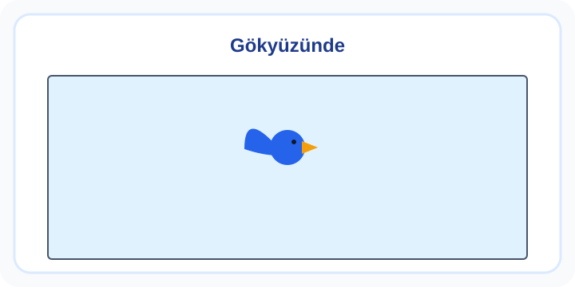

4. Sınıf İngilizce Cartoon Characters Zor Test 2
Cartoon Characters çalışmasında karakterlerin özellikleri ile ilgili kısa İngilizce ifadeleri anlamlarıyla eşleştir. Diyalogda konuşan kişiyi ve verilen durumu belirlemek, bildiğin kelimeleri doğru bağlamda kullanmana yardımcı olur.
10 soru · Yaklaşık 19 dakika. Bu bir süre sınırı değildir; açıklamaları kendi hızında inceleyebilirsin.
Cartoon Characters: konu anlatımı ve çözümlü çalışma
Başlamadan önce dikkat et
But sözcüğünden sonraki olumsuzluğu atlama.
Bu testten iki çözümlü örnek
1. örneği incele
Look at the picture. A bird is in the sky. Which sentence is correct?

- It can swim.
- It can fly.
- It can't fly.
- It can ride a bike.
Cevap ve gerekçe
It can fly.
Görselde kuş havada uçmaktadır. Can fly uçabilir demektir; can’t fly uçamaz anlamına gelir.
2. örneği incele
Ask about ability using can: "________ you play the guitar?" "No, I ________."
- Can / can
- Do / don't
- Can / can't
- Are / am not
Cevap ve gerekçe
Can / can't
Soru özellikle yeteneği sorar: Can you play the guitar? Olumsuz kısa cevap No, I can’t biçimindedir.
Testten sonra kısa çalışma
Hayalî bir karakter için bir yapabildiği ve bir yapamadığı eylem yaz.
Yanlışlarını Öğren bölümünde kendi cevabını açıklamayla karşılaştır. Bir sonraki denemede cevabı ezberlemek yerine nedenini anlat. Veliler için sonuçları yorumlama
Soruların hazırlanması ve kontrol sınırları · İçerik hatası bildir
Öğrenme alanı: Cartoon Characters. Buradaki beceriler çalışma odağını anlatır; resmî MEB öğrenme çıktısı kodları değildir. testcoz.pro, Millî Eğitim Bakanlığı’nın resmî sitesi değildir.
Testleri kayıt olmadan çözebilirsiniz. İsteğe bağlı kayıt, günlük hedef ve öğrenci paneli gibi ek özellikler için sunulur.